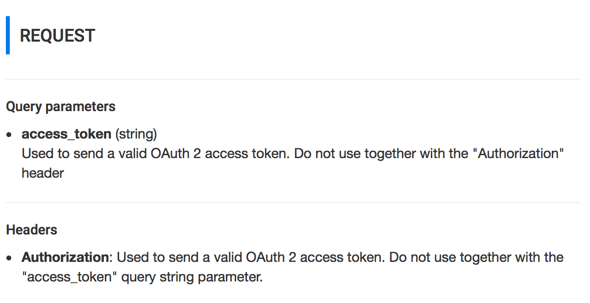
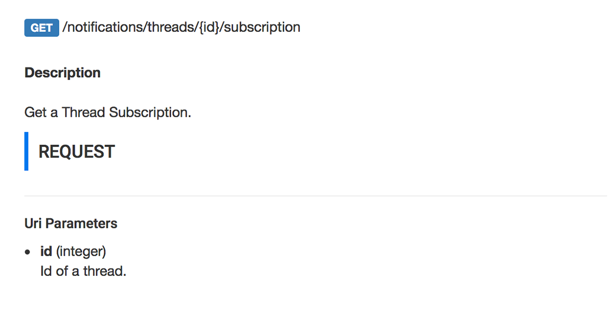
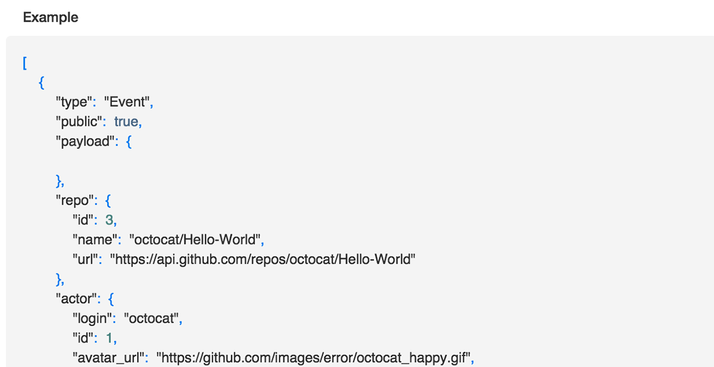
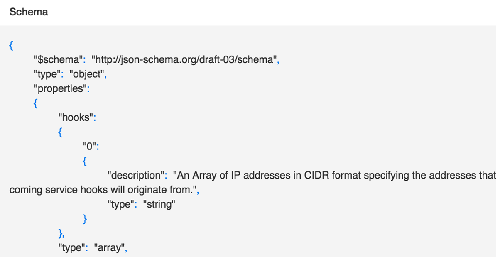

raml2html.leanlabs.io
Geting started
Blog
Example
Github
Raml to Html
Build extensive API documentation from a RAML (RESTful API Modeling Language) file
View demo

Security information

Parent resource capability

Syntax highlighting

Full support json schemes